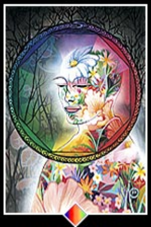

Osho

La meditación es ser TESTIGO. La meditación comienza por separarse de la mente, por ser un testigo. Ésta es la única manera de separarse de algo. Si estás mirando hacia la luz, naturalmente, una cosa es segura: tú no eres la luz; eres quien está mirando la luz. Si estás observando las flores, una cosa es segura: tú no eres la flor; eres el observador. La contemplación es la clave de la meditación. Contempla tu mente. No hagas nada: ni repetir un mantra, ni repetir el nombre de Dios. Sólo observa lo que la mente hace. No la perturbes, no la obstaculices, no la reprimas; no emprendas nada por tu parte. Limítate a ser un observador. Y el milagro de la contemplación es la meditación. A medida que observes, lenta, lentamente, la mente se vaciará de pensamientos. Pero no te estás quedando dormido; estás cada vez más alerta, más consciente. Cuando la mente se vacía por completo, toda tu energía se transforma en una llama de despertar. Esta llama es el resultado de la meditación. Así que puedes decir que la meditación es otro nombre de la contemplación, del ser testigo, de la observación, sin emitir juicio ni evaluación alguna. Sólo por medio de la contemplación, saldrás de inmediato de la mente...”
Osho Zen Tarot
01-Existecia | |
Tú no eres accidental: la existerncia te necesita. Esto es lo que te da dignidad: toda la exstencia te extranará- Las estrellas, el sol, la luna, los árboles y los pájaros y la tierra, todoel universo sentira que hay un pequeño lugar vacante que no puede ser llenado por nadie mas que tú | |
29-Confianza | |
| No pierdas tu vida por aquello que se te va a quitaar. Confía en la vida; si confías, sólo entonces puedes poner tu mente a un lado. Con la confianza, se abre algo inmenso. Etonces la vida no es una vida ordinaria; se vuelve llena de Dios, desbordante. | |
37-Lentamente bajando | |
| La mediración es una forma de medicina: se usa solamente por el momento. Una vez has aprendido la cualidad, no necesitas hacer una meditación en particular, la meditación se a extendido a toda tu vida. Caminar es Zen, sentarse es Zen. | |
39-Posibilidades | |
| La mente puede aceptar límites en cualquier parte. Pero la realidad es que, por su naturaleza misma, la existencia no puede tener límites, porque ¿existirá más allá de los límites? | |
53-Sueño | |
 | Esto ha sido una y otra vez a través de las épocas; toda la gente religiosa ha estado diciendo: venimos solos a este mundo y nos vamos solos. Todo este "estar juntos" es una ilusión. La misma idea de "estar juntos" surge porque estamos solos y la soledad duele. |
78-Madurez | |
|  | La distinción entre las hierbas y las flores es la misma que hay entre el no saber que eres un Buda y el momento en que sabes que eres un Buda.En realidad no hay posibilidad de que sea de otra manera. Buda ha florecido, completamente abierto. Sus lotos, sus pétalos han llegado a una plenitud... |